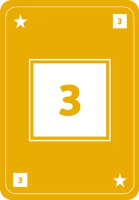
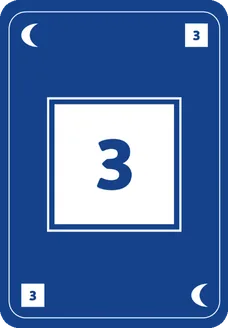
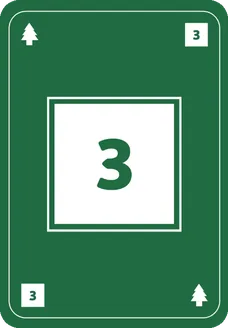
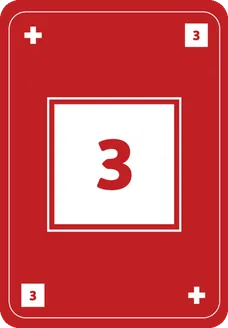
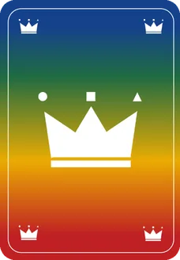
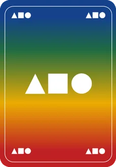
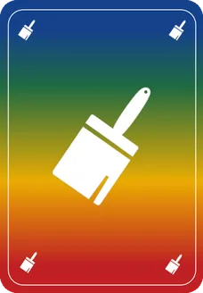
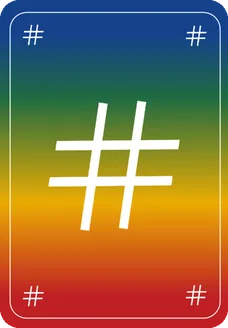
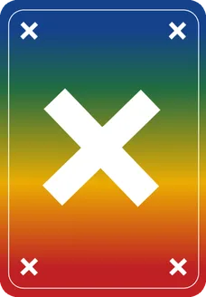
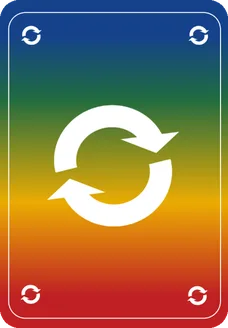

Contenido
68 cartas: 60 numeradas (4 colores × 3 figuras × 5 números), 5 comodines y 3 especiales.
Objetivo
Sé el primero en quedarte sin cartas.
Preparación
Baraja y reparte las 68 cartas entre todos. Se elige quién empieza la primera ronda.
Cómo se juega una ronda
Quien empieza dice un condicionante (de 1 a 3 atributos: color, figura y/o número) y cuántas cartas pone. Las deja boca abajo en el centro.
«¡2 triángulos azules!»-
El siguiente jugador decide:
Creérselo: dice cuántas cartas añade con el mismo condicionante, las pone boca abajo y pasa turno. «Me lo creo… ¡1 triángulo azul!»Dudar: destapa el montón.
Al dudar
El montón vuelve a la mano de quien ha mentido.
El montón pasa a la mano de quien ha dudado.
Nueva ronda: la empieza el jugador siguiente a quien se ha llevado el montón.
Si te queda 1 carta en la mano, avísalo gritando ¡XINGON!
Atributos
El condicionante puede combinar de 1 a 3 de estos atributos. Cada color tiene además su símbolo en las esquinas, para que se distinga aunque no se vean bien los colores.
Color
Figura
Número
Ejemplos de condicionante
Descarte




Si reúnes 4 cartas del mismo número y figura (los 4 colores), enséñalas y descártalas en cualquier momento.
Comodines y especiales
Comodines
Se juegan cuando quieras, boca abajo.

GeneralVale por cualquier carta: siempre cumple el condicionante. Hay 2 cartas de este tipo.

FiguraVale por cualquier figura. Solo cumple si el condicionante pide únicamente figura.

ColorVale por cualquier color. Solo cumple si el condicionante pide únicamente color.

NúmeroVale por cualquier número. Solo cumple si el condicionante pide únicamente número.
Especiales
Se juegan boca arriba, solo en tu turno y una vez por partida. Después se descartan.

Saltar turnoTe saltas tu propio turno: no tienes que creer ni dudar, y decide el siguiente jugador.

Cambio de direcciónEl turno pasa a ir en sentido contrario. Hay 2 cartas de este tipo.
Fin y puntuación
La partida termina cuando un jugador se queda sin cartas.
Se puede puntuar por partidas ganadas, o sumando los números que les quedan en la mano a los demás (cada comodín resta 1 punto). Quien ha ganado se suma los puntos de todos los demás jugadores.
Modo 2 jugadores
Antes de repartir, retira 18 cartas al azar sin mirarlas. Quedan fuera de la partida.
Variante fácil
Para jugar con niños o para aprender: el condicionante solo puede tener 1 atributo (un color, una figura o un número) y se juega sin comodines ni especiales. Retíralos antes de repartir.
Preguntas frecuentes
¿Qué pasa si al destapar el montón hay un comodín?
El comodín general siempre cumple el condicionante. Los de figura, color y número solo cumplen si el condicionante pide únicamente ese atributo. Por ejemplo, en «¡2 rojas!» vale un comodín de color, pero en «¡2 triángulos rojos!» no.
¿Puedo jugar una carta especial en el turno de otro jugador?
No. Las especiales se juegan boca arriba y solo en tu turno. Cada una se usa una vez por partida y después se descarta.
¿Hay que decir cuántas cartas pones?
Sí. Al poner cartas, di el condicionante y cuántas pones: «¡2 triángulos azules!». Quien se lo cree también dice cuántas añade.
¿Quién empieza la ronda después de dudar?
El jugador siguiente a quien se ha llevado el montón, tanto si era mentira como si era verdad.
¿Cuándo puedo descartar 4 cartas iguales?
En cualquier momento, aunque no sea tu turno. Tienen que ser del mismo número y figura y de los 4 colores. Enséñalas a todos antes de descartarlas.
¿Cómo se juega con 2 jugadores?
Igual, pero antes de repartir se retiran 18 cartas al azar sin mirarlas. Así no se puede saber exactamente qué cartas tiene el otro.